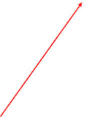

Viby i gamla tider
Håslöv 13:16 (Tidigare 13:4) "Isakens"

Med "Hammarsgäret" som västlig gräns bildar den gård, som vi allmänt kallar Isakens, Håslöv 13:s utpost mot Hammar och Nosaby socken. (Färdas man söderut mot Åhus på väg 118, ser man gården något hundra meter från vägen på sin vänstra sida, strax innan man kommer fram till Hörnhems Handelsträdgård).


Håslöv 13:4
Ägandeförhållanden
1831-1845 Ägandeförhållande
Nr.13 1/16 mt (Åbo Nils Abrahamsson)
|
Åbo Nils Persson |
20/9 1820 |
Åraslöv |
|
Åbo Henric Ericsson |
Hammar |
|
|
Fjärdingsman Hans Larsson |
Nymö |
1845-1856 Ägandeförhållande
| 1/16 mt. äges av Hans Larsson i Nymö |
1856-1863
Ägandeförhållande
Nr.13 1/16 mt
| Fjärdingsman Hans Larssons arvingar | Nymö |
| Arrendator Per Jönsson | |
1864-1875 Ägandeförhållande
Nr.13 1/16 mt
| Fjärdingsman Hans Larssonsarvingar | Nymö |
| Arrendator Sven Persson Nr11 | |
1876- Ägandeförhållande
Nr.13 1/16 mt
| Fjärdingsman Hans Larssons arvingar | Nymö |
| Åbo Sven Persson Nr11Nils Nilsson | 16/12 1824 - 29/4 1886 |
Se under Håslöf 13 – följande anteckningar i husförhörslängden 1876-
Deraf 13/132 förm. :1/16 mt Åbo Nils Nilsson å nr 11 Håslöf,1/16 mt Åbo Nils Persson å Håslöf nr 20 och 1/16 mt Åbo Nils Andersson nr 16 Håslöf
13:4
Fastighetsbildning 1845
Måns MånssonAreal Total 8,25 ha

Boende och Ägandeförhållande Håslöv 13:15 (13:4)
Anders Isaksson, av flertalet kallad Isak, kom från Lyngsjö 1853 i samband med giftermålet med Kersti Olsdotter, boende på Viby nummer 6. De bosatte sig då på Viby nummer 8. Efter att ha bott på ett flertal ställen inom socknen köpte de fastigheten Håslöv 13:4, (som sen blev Håslöv 13:6, och ännu längre fram Håslöv 13:15), år 1881 av Carl Thuresson och Nils Persson. När gårdsbyggnaderna, med boningshus och ladugård, var färdigställda flyttade de in på den gård som skulle följa "Isakasläkten" i över hundra år.
År 1902 köptes också 27/2048 mantal stor areal in på Håslöv 17. (Denna mark som längre fram i historien skulle övergå i barnbarnet Johans ägo, där han lade grunden till Hörhem).

Anders Isaksson "Isak" med hustrun Kerstin Olsdotter
|
År |
Ägare: |
Född |
Församling |
Infl. från |
Gift |
|
1881 - 1889 |
Åbo Anders Isaksson H. Kersti Olsdotter D. Bengta Andersdotter Drängen Sven Olsson H. Bengta Andersdotter |
25 24 65 61 65 |
Lyngsjö Nosaby Wiby Hjärsås Wiby |
Håslöv 5 „ „ In byn 89 |
89 |
År 1889 gifte sig dottern Bengta med Sven Olsson. Som synes på nedanstående sammanställning över åren 1890 -1899 övertog de gården medan Anders och Kersti bodde kvar på undantag. (OBS! Anders står dock kvar som ägare av fastigheten på Håslöv 17
i Församlingsboken för år 1900 – 1910).
Håslöf nr13:15
211/4096 mt
|
År |
Ägare: |
Född |
Församling |
Död |
Anm. |
|
1890 - 1899 |
F d Åbo Anders Isaksson H. Kersti Olsdotter Åbo Sven Olsson H. Bengta Andersdotter Dott. Anna Maria Son Johan Alfred Dott. Hilda Caroline Dott. Hilma Carolina Son Carl Alfred |
25 24 61 65 91 93 95 97 99 |
Lyngsjö Nosaby Hjärsås Wiby
" |
93 96 |
Undantag "
|
Håslöf nr13:15
211/4096 mt
|
År |
Ägare: |
Född |
Församling |
Död |
Anm. |
|
1900 - 1927
|
F d Åbo Anders Isaksson H. Kersti Olsdotter Åbo Sven Olsson H. Bengta Andersdotter Dott. Anna Maria Dott. Hilma Carolina Son Carl Alfred Son Johan Bernhard Dott. Emma Linnea Son Axel Ludvig Son Oscar Wilhelm |
1825 1824 1861 1865 1891 1897 1899 1902 1903 1905 1906 |
Lyngsjö Nosaby Hjärsås Wiby
" „ „ „ „ |
1911 1905 1907
1903 |
Undantag „
|
Bengta blev således änka 1907 och stod ensam med sina sex barn.
På gården odlades också mycket med primörer vilka hon forslade in, med häst och vagn, till Kristianstad och sålde under torgdagarna där. Enligt Bengtas egen utsago var sparrisodlingen något av hennes specialitet. Visserligen krävde den många timmars arbete, framförallt på tidiga morgontimmar, men gav i gengäld en god ekonomisk vinst.
Den robusta och levnadsglada Bengta, blev en välkänd profil på torget där många ville handla av "den glada änkan från Viby".

Här en bild tagen betydligt längre fram i tiden. Bengta poserar här, på sin ålders höst, stolt med sina barn: Döttrarna Anna – gift med Sven Ström och Hilma – gift med John Nilsson samt sönerna Carl – som övertog gården, Johan = Hörnhem, Axel = Axel Svenssons måleri och Oscar = kontorschef på Lavessons.
Håslöf nr13:15
211/4096 mt
|
År |
Ägare: |
Född |
Församling |
Död |
Anm. |
|
1927 - 1935 |
Enkan. Bengta Andersdotter Åbo Carl Alfred H. Nelly Linnea f. Liljedahl Son Kurt Allan Svensson Son Sven-Erik Bertil |
1865 1899 1907 1931 1933 |
Wiby „ Nosaby Gust. Adolf „ |
|
|
År 1927 övertog äldste sonen Carl gården. År 1930 gifte han sig med Nelly Liljedahl från Hammar. Förutom de båda ovan nämnda sönerna Allan och Bertil kom också en dotter, Ulla-Britt, och ytterligare en son Lars några år senare.
Bengta dog år 1945.
· Porträtt av Nils Svensson · Tablå Håslöv 15 · Tegskifteskarta 1765
· Arrendatorer på 13 · Frälsegården · Gälltoftens · Isakens · Gustav Nils
· Österblads · Westes ·Birtens ·Månstorp Inledningssidan